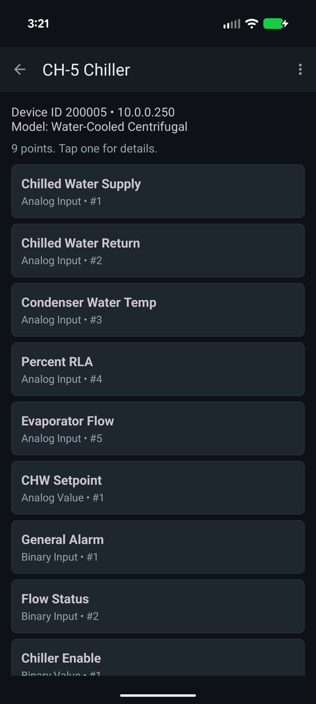

What do the BACnet object types mean?
BACnet describes everything in a controller as an object, and the object's type tells you what kind of data it holds and how it behaves. The three families you will meet constantly are Analog (continuous numbers), Binary (two states) and Multi-state (a short list of named states). Each comes in Input, Output and Value flavours: Input means a physical sensor, Output a physical actuator, and Value a software point inside the controller's logic.

The common types
| # | Type | What it is |
|---|---|---|
| 0 | Analog Input | A physical sensor reading a continuous value: a temperature, a pressure, a flow. |
| 1 | Analog Output | A physical analog output driving something: a valve or damper position, a fan speed reference. |
| 2 | Analog Value | A number inside the controller's logic: a setpoint, a calculated value, a tuning parameter. |
| 3 | Binary Input | A physical two-state input: a status contact, a flow switch, an alarm contact. |
| 4 | Binary Output | A physical two-state output: a relay starting a fan or opening a two-position valve. |
| 5 | Binary Value | A two-state software point: an enable flag, a mode, a software alarm. |
| 8 | Device | The controller itself. Holds the device name, model, vendor, and the Object_List that enumerates everything else. |
| 13 | Multi-State Input | A physical input with a small set of named states. |
| 14 | Multi-State Output | A physical output with named states: Off / Low / High. |
| 19 | Multi-State Value | A software point with named states: Occupied / Unoccupied / Standby. |
| 17 | Schedule | A time-of-day schedule object that writes to other points. |
| 20 | Trend Log | Historical samples of another point, logged inside the controller. |
| 15 | Notification Class | Where alarms get routed and who gets told. |
| 10 | File | A file on the device, used for firmware and configuration transfer. |
| 16 | Program | A control program running on the device. |
| 23 | Accumulator | A running total, typically a utility meter. |
Input, Output, Value — the distinction that matters
The suffix tells you where the value comes from, and that determines whether you can write to it:
- Input objects reflect a physical sensor. Writing to
Present_Valueis ignored unless you first setOut_Of_Serviceto true, which disconnects the object from the sensor so you can simulate a reading. That is a commissioning technique, and it is easy to leave behind by accident. - Output objects drive hardware and are commandable through the priority array.
- Value objects live in software. Most are commandable; some are plain read/write properties with no priority array at all.
See BACnet priority and stuck overrides for what commandable actually means in practice.
Reading an object address
A point is identified by type plus instance number, so "Analog Input 4" and
"Binary Input 4" are two different points on the same controller. Tools write this
various ways — AI:4, AI-4, analog-input,4
— but they all mean the same pair.